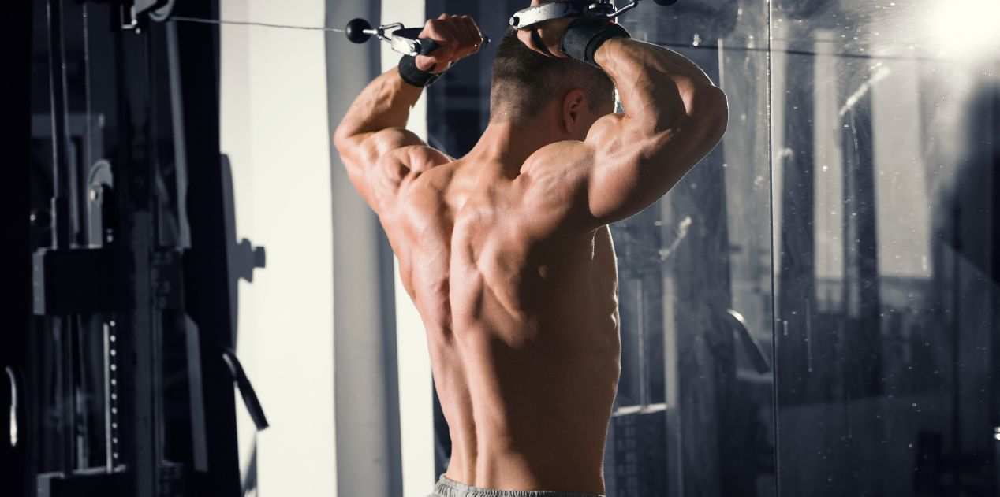
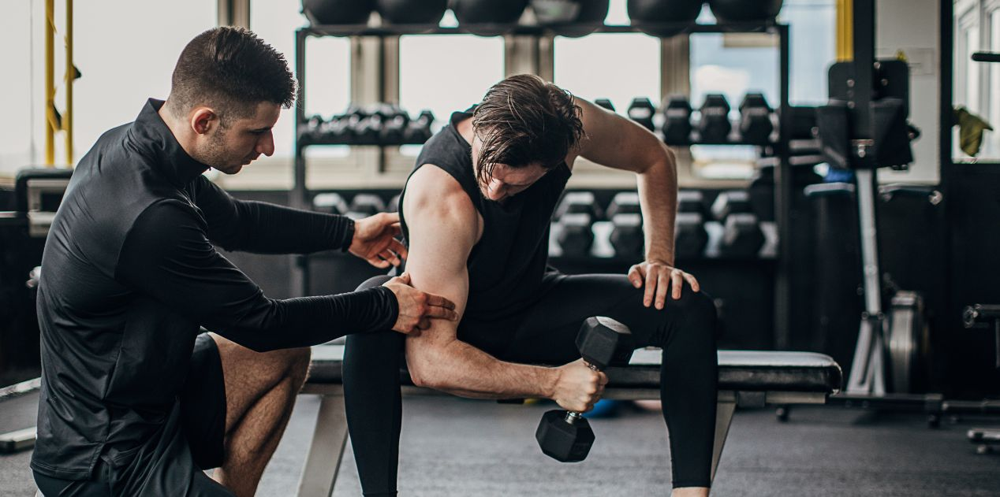
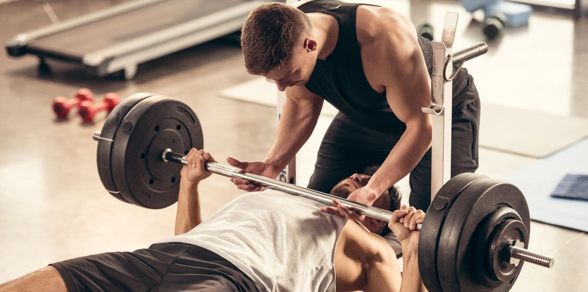

Obiettivo: tonificare
La nostra palestra vi offre una sala pesi all'avanguardia e fornita di tutta l'attrezzatura necessaria per un allenamento in sala pesi, supervisionato dai nostri Personal trainer certificati. Disponiamo di ben 10 panche da utilizzare liberamente, 15 tapis roulants , 10 cyclettes, 10 ellittiche, 3 coppie di manubri dai 2 ai 56kg per adattarci ad ogni vostra esigenza, 2 smith machines e macchinari di ultima generazione firmati Technogym. Ognuno di voi si allenerà guidato e corretto, ove necessario, dai nostri coach, aiutandovi a massimizzare la resa di ogni esecuzione a 360°. Postura, salute fisica, movimento in totale sicurezza: vi aiuteremo ad approcciare al meglio con il mondo del fitness e del sollevamento pesi, lasciandovi un'esperienza di livello. Se anche tu vuoi raggiungere la forma fisica dei tuoi sogni, che aspetti? Vieni da NewFitness Gym!
I Nostri Personal Trainer
Gianluca
Laureato in scienze motorie con specializzazione in recupero funzionale. Con le sue due certificazioni di personal training e preparazione atletica, Gianluca è uno dei migliori coach di Roma, e sarà sempre pronto ad aiutarvi a raggiungere i vostri obiettivi di salute e benessere.
Francesca
Personal trainer certificata CONI con un passato da campionessa e allenatrice di pattinaggio sul ghiaccio. Francesca vi aiuterà nel vostro percorso fitness sviluppando piani di allenamento adatti a tutte le esigenze.
Christian
Fitness Coach da circa 10 anni, laureato magistrale in Scienze e Tecniche delle attività motorie preventive e adattate. Con Christian ti sentirai sempre in mani sicure, tramite programmi di allenamento personalizzati e attenzione ai movimenti nella sala pesi.
FAQ
Farsi seguire da un coach ha un prezzo?
Puoi scegliere tra diverse opzioni. Puoi decidere di farti fare semplicemente un programma di allenamento da uno dei nostri coach, quindi una procedura gratuita, o puoi decidere di farti fare una scheda E farti seguire passo passo da uno dei personal trainer per tutta la durata degli allenamenti, che avrà un costo specifico a discrezione di ciascun coach.
Come ci si prenota online?
Puoi farlo compilando questo form !
Ci si può allenare anche con una scheda fatta da coach esterni alla palestra?
Certamente. Ognuno è libero di seguire la scheda che preferisce, anche se quest'ultima non viene richiesta dai nostri personal trainer.